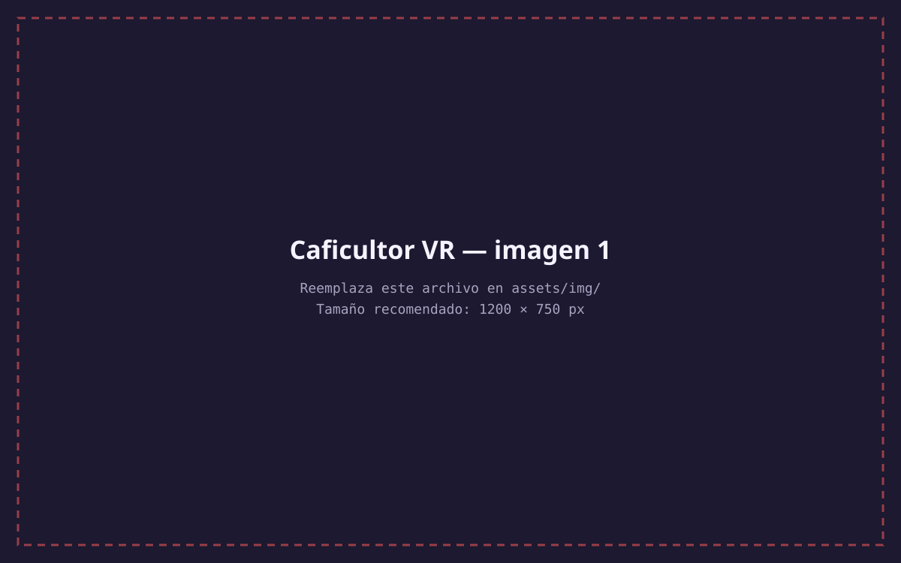

Videojuego
P.01

Caficultor VR
Es un videojuego de realidad virtual que permite a los jugadores experimentar la vida de un caficultor en el cual debes gestionar la cosecha y el proceso de transformación del café. el proyecto fue realizado con un equipo en el cual mi rol fue el de programador de las mecanicas e interacciones del juego, así como la integración de los elementos de realidad virtual. Lo que hace especial a este proyecto es el manejo en realidad virtual y la experiencia que le ofrece al jugador de vivir la experiencia de ser un caficultor.